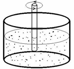
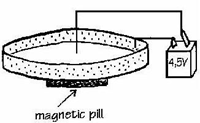
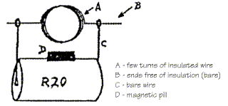
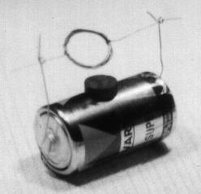

IYPT 1999 Problems
Problems for the 12th IYPT 1999
1. Rotation
A long rod, partially and vertically immersed in a liquid, rotates about its axis. For some liquids this causes an upward motion of the liquid on the rod and for others, a downward motion. Explain this phenomenon and determine the essential parameters on which it depends.

2. Ionic motor
An electrolyte (an aqueous solution of CuSO4, NaCl, …) in a shallow tray is made to rotate in the field of a permanent magnet (a small “pill” placed under the tray). An electric field is applied from a 1.5 V battery in such a way that one electrode is in the form of a conducting ring immersed in the electrolyte — the other is a tip of a wire placed vertically in the centre of the ring. Study the phenomenon and find possible relationships between the variables.

3. Magic motor
Construct a DC motor without a commutator, using a battery, a permanent magnet and a coil. Explain how it functions.


4. Soap film
Explain the appearance and development of colours in a soap film, arranged in different geometrical ways.
5. Dropped paper
If a rectangular piece of paper is dropped from a height of a couple of meters, it will rotate around its long axis whilst sliding down at a certain angle. What parameters does the angle depend on?
6. Singing glass
When rubbing the rim of a glass containing a liquid a note can be heard. The same happens if the glass is immersed in a liquid. How does the pitch of the note vary depending on different parameters?
7. Heated needle
A needle is hanging on a thin wire. When approached by a magnet, the needle will be attracted. When heated, the needle will return to its original position. After a while the needle is attracted again. Investigate this phenomenon, describe the characteristics and determine the relevant parameters.
8. Energy converter
A body of mass 1 kg falls from a height of 1 m. Convert as much as possible of the released potential energy into electrical energy and use that to charge a capacitor of 100 µF.
9. Air dryer
During a time span of 4 minutes collect as much water as possible from the air in the room. The mass of the equipment must not exceed 1 kg. Its initial temperature should be equal to ambient (room) temperature. The water should be collected in a glass test tube, provided by the jury.
10. Charged balloon
An air-filled balloon rubbed with wool or dry paper may stick to the ceiling and stay there. Investigate this phenomenon and measure the charge distribution on the surface of the balloon.
11. Billiard
Before a pool-billiard game starts, 15 balls form an equilateral triangle on the table. Under what conditions will the impact of the white ball (16th ball) produce the largest disorder of the balls?
12. Flour craters
If you drop a small object in flour, the impact will produce a surface structure which looks like a moon crater. What information about the object can be deduced from the crater?
13. Gas flow
Measure the speed distribution of the gas flow in and around the flame of a candle. What conclusions can be drawn from the measurements?
14. Wheat waves
The wind blowing through a wheat field creates waves. Describe the mechanism of the wave formation and discuss the parameters which determine the wavelength.
15. Bright spots
Bright spots can be seen on dew drops if you look at them from different angles. Discuss this phenomenon in terms of the number of spots, their location and angle of observation.
16. Liquid diode
Make an electrochemical diode and investigate its properties, in particular the frequency dependence.
17. Sound from water
When you heat water in a kettle you hear a sound from the kettle before the water starts to boil. Investigate and explain this phenomenon.